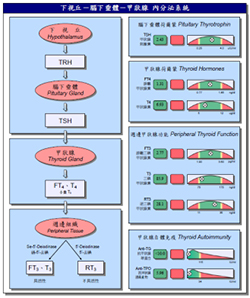

<健康世界>體重莫名暴增、常覺得累？可能是「甲狀腺」惹的禍！
甲狀腺功能減退會導致各種不同的健康問題
陽光活力診所 整理
資料來源：2020.09 今周刊 第 1237 期
|
現代生活中的節奏快速，加上長期超負荷工作與課業學習，造成各種現代病上身，相信大家最常遇到的就是容易覺得疲倦、怎麼樣都瘦不下來的問題，這時候，你可能就要小心自己是不是甲狀腺在作怪了！ 甲狀腺有什麼功用？ 甲狀腺是人體內分泌系統很重要的一部份，沒有正常運作的甲狀腺，想要有健康正常的生活幾乎是不可能的，因為它負責分泌激素與新陳代謝、與大腦健康、精神狀態甚至情緒、記憶力等息息相關，是我們其他重要器官的基礎。 甲狀腺有點「重女輕男」，中老年人及女性是好發的危險群，發病比例大約是男性的2~8倍，而且特別喜歡在冬天出沒。 如果出現這些症狀，要注意甲狀腺健康 甲狀腺功能減退會導致各種不同的健康問題，像是關節疼痛、肥胖、心臟病、不孕、抑鬱等，但甲狀腺疾病是可以避免的，只要及時掌握這些症狀，就能提早接受治療： 1. 體重突然爆增 2. 肌肉無力、僵硬 3. 容易疲勞 4. 便秘 5. 記憶力衰退 6. 頭髮稀疏，粗糙或乾燥 7. 粗糙，乾燥，蒼白的皮膚8. 脖子變粗 9. 浮腫的臉 10. 關節腫痛 11. 時常憂鬱，嚴重時甚至會變成憂鬱症 12. 煩躁不安 13. 月經失調，經期不規律。 提早預防3原則，維持甲狀腺的健康
除此之外，如果讓自己營養不良，就有可能發生甲狀腺功能低下加重的情況。供應足夠的蛋白質和熱量，才能改善甲狀腺功能。 |
|||||
| -------------------------------------------------------------------------------------------------------------------------------------------------------------------------------------- | |||||
|  | 【相關檢測】 甲狀腺荷爾蒙評估Thyroid Hormone Profile 此檢測完整評估：甲狀腺代謝調節及活性、甲狀腺荷爾蒙製造及分泌、周邊組織對甲狀腺素的轉化利用及自體免疫抗體，有助於診斷與治療與甲狀腺荷爾蒙不平衡所暗藏的慢性疾病，包括：老化、疲勞、憂鬱、焦慮、恐慌、便秘、皮膚粗躁、經前症候群、不孕、性慾減退、肥胖、心血管疾病、記憶力衰退、肌肉和關節疼痛等。目前陽光活力診所可提供內分泌及新陳代謝相關評估，有興趣者請洽分機#16099諮詢專線。 | |